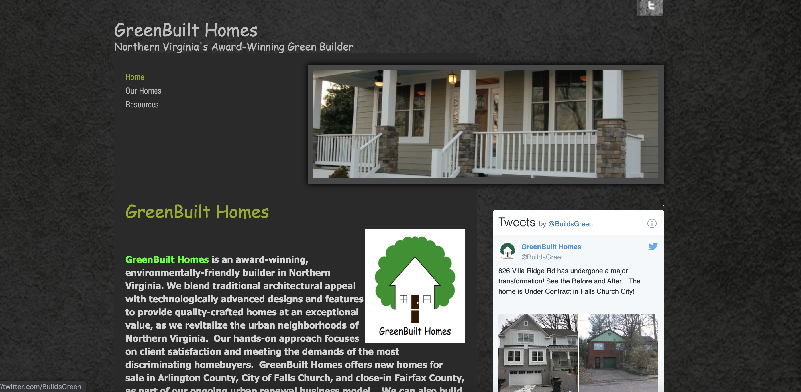
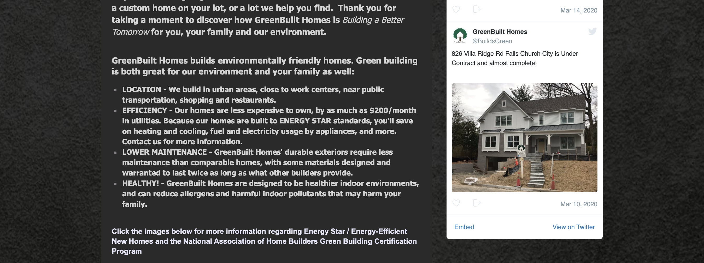
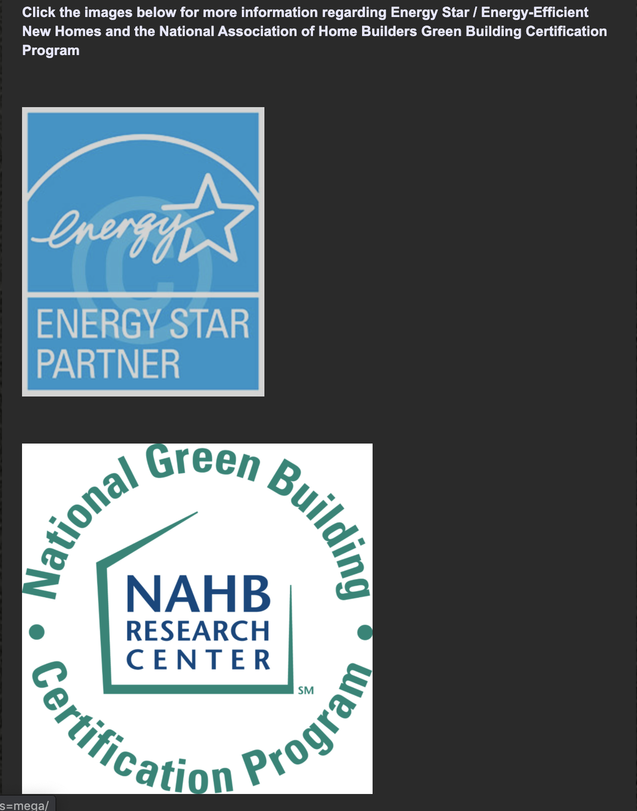
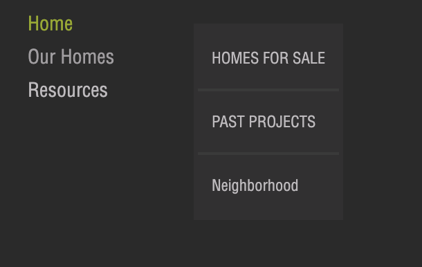
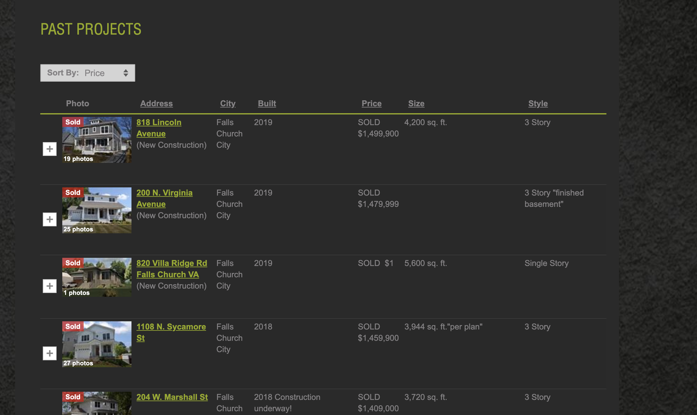

There seems to be a slight issue with the hosting site so here is another link to copy and paste: https://www.greenbuilthomes.net/
The audience for this site is is enviormentally conscious potential homebuyers in the Northern Virgnia area. They are wealthy individuals that prioritize design and functionality in their homes. They view efficiency and order very important both in their homes and their lives.


Looking first at the homepage, I plan on changing the eyeflow of the page to make the content flow more smoothly. I will edit the logo to make the background more transparent and move it to the top left. I also plan on moving the twitter link to the botom and changing the button to a better version of the twitter logo. I will also change the color scheme and reverse type to make the page more user friendly.
 At the bottom of their homepage, Greenbuilt Homes has industry certification links that I believe could be better organized through the use of bootstrap along with their awards to provide a more user freindly and attractive layout.
 I also plan on fixing the navigation to make it more easily navigable, fixing broken pages with no content and fixing usability of the navigation itself.
I believe that the past projects page on their site could benefit the most from a bootstrap redesign. I plan on utilizing the coloumns and rows in bootstrap to completely reorganize this page and make it more functionable.